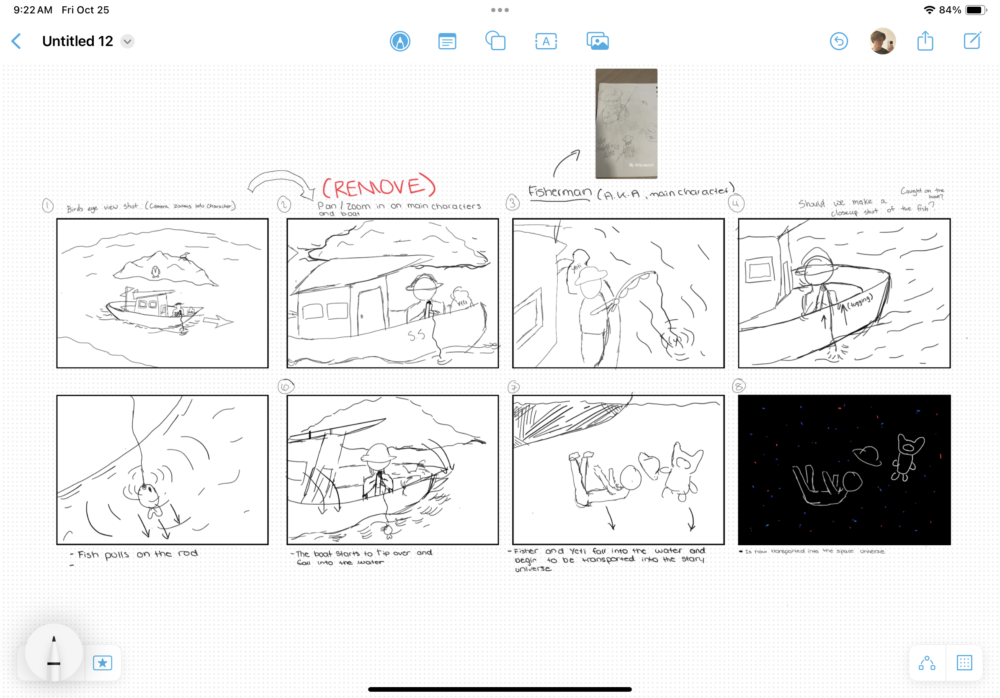

The project I did with the thrid years
For this project I ended up creating the boat, flag and ocean the boat floats on, I also created the textures for each. In addtion I helped with animation and video editing.

Storyboard
Blender view 1
Blender view 2
Texture/node view